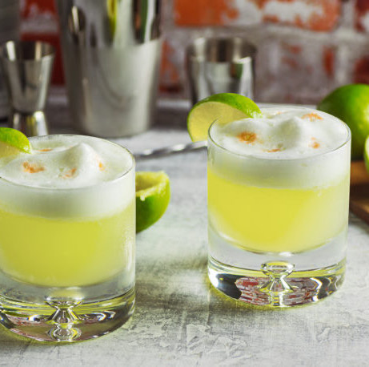

Victor Vaughen Morris was an American who moved to Peru for the mining trade in 1903. He opened The Morris Bar and made the drink as an alternative to a Whisky Sour. The modern Psico Sour wasn’t created until the late 1920s when a bartender named Mario Bruige added Angostura Bitters and egg white. The famous drink also has its own day, Pisco Sour day is celebrated on the first saturday of February.
In a blender or shaker add, the Pisco, lime juice, sugar syrup, egg white and a large handful of ice. Either shake for 20-25 seconds or blend for 10 seconds. Then strain into your chosen glass adding a dash of Amargo Chuncho Bitters on top. Garnish with slice of lime.